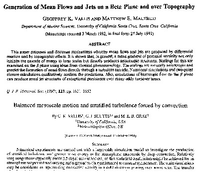

Papers
My Papers
- Chronologically
- Thematically

Classic Papers
by various authors on GFD, climate etc.
Fluid Dynamics of the Atmosphere and Ocean
Autumn (Term 1) 2018.
Coursework No 1 : Due 5 November.
Coursework No 2 : Due 14 December.
This is a web site for material related to the module Fluid Dynamics of the Atmosphere and Ocean (ECMM719).
It may be used in conjunction with the ELE site, which is only available to University of Exeter students.
- Credit value: 15
- Pre-requisites: Undergraduate maths, physics or engineering, including vector calculus and fluid dynamics. Ideally classes equivalent to ECM2706 and ECM3707. Or permission of the instructor.
- Assessment:
- Written exam (closed book) 80%
- Course work. 20%. 2 assessed problem sets, various unassessed sets.
- Lectures times:
- Tuesday 12.30pm, Harrison 203
- Tuesday 5.30 pm, Harrison 101
- Tuesday 8.30 am, Harrison 203
- Office Hours:
- Friday 1.30 pm and by appointment
- Harrison 318
- Ph.D. students and postdocs are welcome.
Approximate Course Content
The following may change as the course progresses.
- Equations in a rotating frame. Boussinesq and anelastic equations. Conservation properties.
- Hydrostatic and geostrophic balance. Static stability.
- Shallow water equations. Surface waves. Potential vorticity. Geostrophic adjustment.
- Geostrophic Theory, Quasi-geostrophic and planetary geostrophic equations,
-
An introduction to waves. Group velocity. Rossby waves.
-
Generation of jets and mean flows. General circulation of the atmosphere
-
Ekman layers.
-
Simple models of ocean gyres.
Lecture Notes
Lecture notes. Wide text, narrow margins.
Lecture notes Narrow text, wide margins.
New versions uploaded 24 September, 2018.
Extended notes here.
The extended notes are provided as a reference. (Some aspects of the notes go beyond the syllabus for this class, which is approximately defined by the lecture note above.) The basic material on waves may be especially useful.
Supplementary very abbreviated lecture notes here:
Click here to download.
Coursework
Coursework No 1. Due 5 November.
Coursework No 2. Due 14 December.
Example Final Exam with brief solutions
Exam: Click here to download
Sols: Click here to download
- Written exam (closed book) 80%
- Course work. 20%. 2 assessed problem sets, various unassessed sets.
- Tuesday 12.30pm, Harrison 203
- Tuesday 5.30 pm, Harrison 101
- Tuesday 8.30 am, Harrison 203
- Friday 1.30 pm and by appointment
- Harrison 318